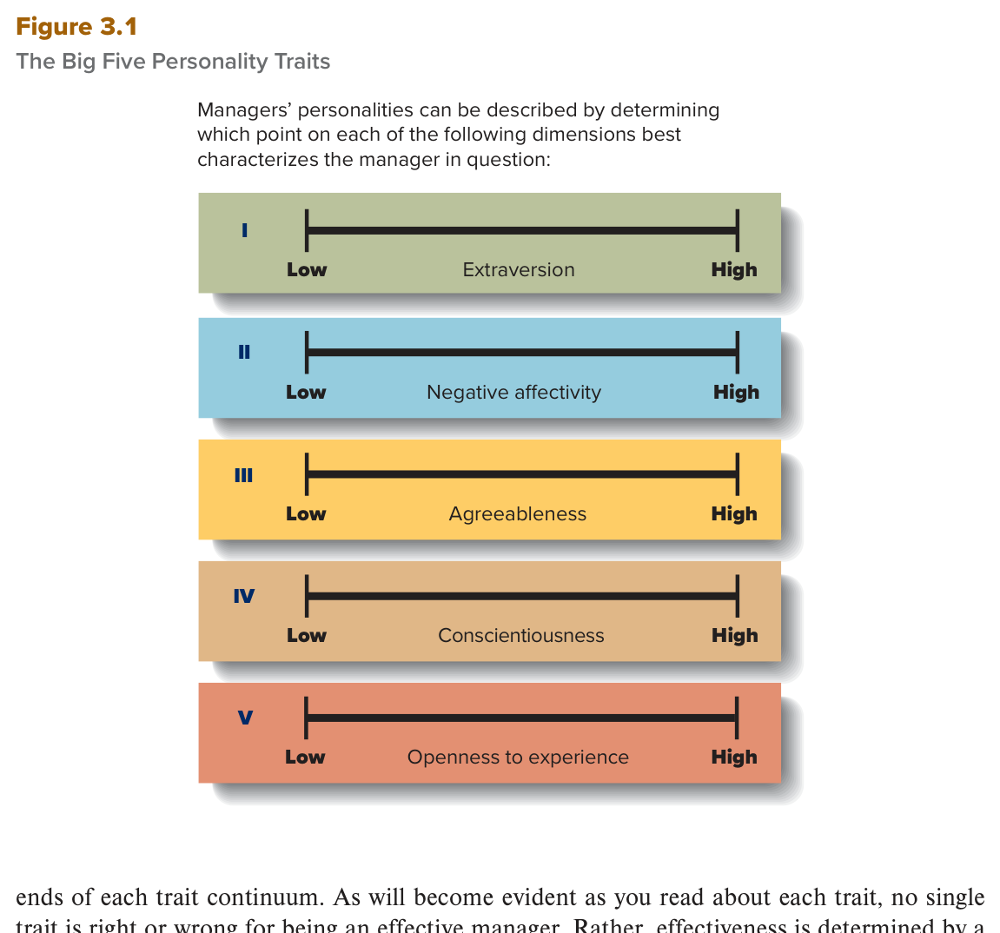
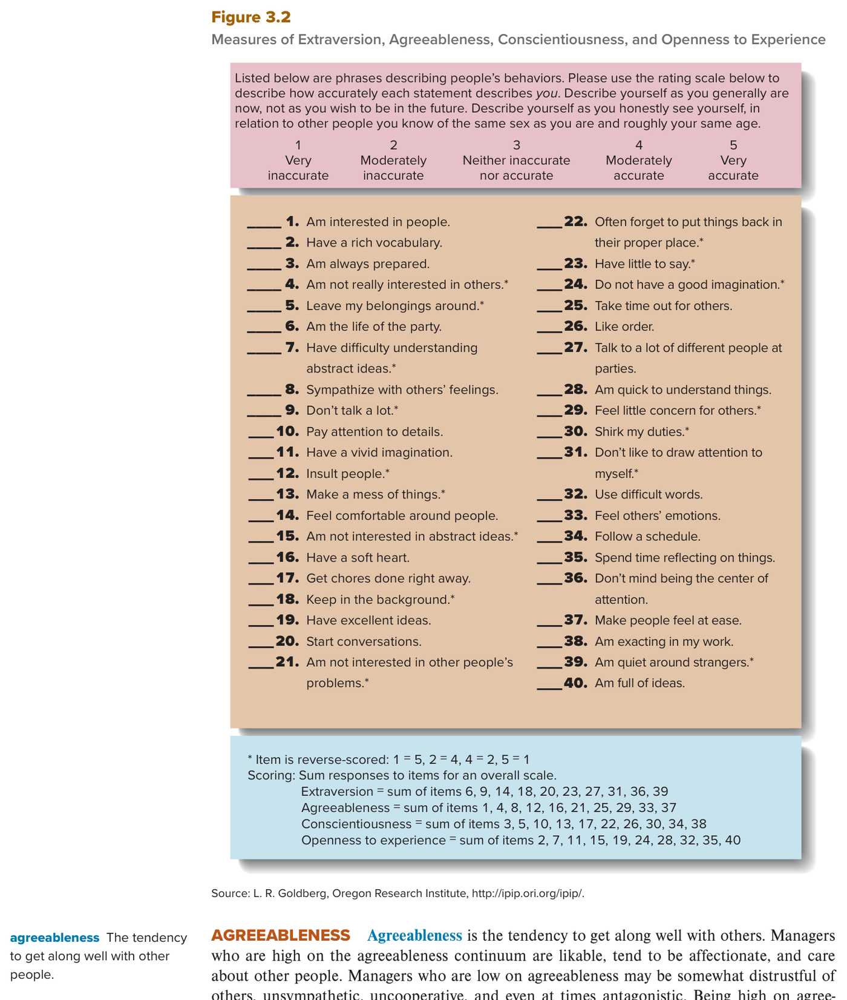

MGT 102 · Chapter 3 · Section 1 of 4:
Personality Traits
Objective LO3-1: Describe the various personality traits that affect how managers think, feel, and behave.
Chapters 1 and 2 were about management itself: what its functions are, and who said what. Chapter 3 turns the camera onto the manager himself — a feeling, thinking human being. He has a personality, he has values, he has moods, and all of them come out in his work and shape the whole organizational culture.
This first section is about the most enduring part of it: personality traits. That word enduring is the key to the section — a trait does not change quickly, unlike a mood, which can change within the same day (that is section 3 of this chapter).
An important warning about this whole chapter: most of its questions are either "the difference between two
similar terms" or "here is a definition, which term is it?". So in this lesson
in particular, learn the English definitions word for word — they are all in the EXAM BOX blocks.
And the numbers: 5 big traits, 3 needs, 16 types, 4 styles. These numbers are asked directly.
The book starts from a simple point: all people — managers among them — have certain enduring characteristics that influence how they think, feel, and behave both on and off the job. These characteristics are called personality traits.
The official definition: enduring tendencies to feel, think, and act in certain ways — and they can be used to describe the personality of every individual.
Why do we care about a manager's personality? Because his personality influences two things:
The book's example — two completely different styles:
| Manager type one | Manager type two |
|---|---|
| Demanding, difficult to get along with, and highly critical of other people | Just as concerned about effectiveness and efficiency, but easier to get along with, likable, and often praises the people around them |
| Both styles may produce excellent results — but their effects on employees are quite different. | |
So do managers deliberately decide to take one of these approaches? The book says: maybe part of the time, but most likely their personalities are what account for their different approaches. And research says the way people react to different conditions depends in part on their personalities — not entirely, in part.
All people, including managers, have certain enduring characteristics that influence how they think, feel, and behave both on and off the job. These characteristics are personality traits: particular tendencies to feel, think, and act in certain ways that can be used to describe the personality of every individual.
It is important to understand the personalities of managers because their personalities influence their behavior and their approach to managing people and resources. Some managers are demanding, difficult to get along with, and highly critical of other people. Other managers may be as concerned about effectiveness and efficiency as highly critical managers but are easier to get along with, are likable, and often praise the people around them. Both management styles may produce excellent results, but their effects on employees are quite different.
The book says: we can think of a person's personality as being composed of five general traits or characteristics, and researchers often call them the Big Five personality traits:
And each one is a continuum: some people are at the high end, some at the low end, and some somewhere in between. The question is not "do you have the trait or not?" — it is how much of it you have.
The golden rule that comes up on the exam a lot: no single trait is right or wrong for being an effective manager. Effectiveness is determined by a complex interaction between:
And more than that: a trait that increases a manager's effectiveness in one situation may impair it in another.
Recent studies say personality traits may even predict job performance in certain situations. Two examples from the book, word for word:
| The trait | What the researchers found |
|---|---|
| Extraversion | Predicted performance better in jobs requiring social skills |
| Agreeableness | Was less positively related to job performance in competitive environments |

This is Figure 3.1 in the book (page 63). Five horizontal lines numbered in
Roman numerals I to V, and each line has Low at one end and High at the other:
I extraversion, II negative affectivity, III agreeableness, IV conscientiousness, V openness to experience.
How to read it: the figure's own inside caption says managers' personalities are described by
determining which point on each of these dimensions best characterizes the manager in question. So the figure
is telling you: these are degrees on lines, not "you have it / you don't" boxes, and not types that people are sorted into.
Every manager = five points on five lines.
What gets asked: the number five, the names of the five traits, and that each one is a continuum.
a) EXTRAVERSION. The tendency to be outgoing, sociable, and energetic in your behavior. The people high on this line are called extraverts — friendly, and they enjoy social interactions. The low ones are called introverts — less inclined toward social interaction and they prefer to spend more time alone. Being high on it is an asset for a manager whose job has a lot of social interaction. And the low manager may still be highly effective and efficient, especially when the job does not require much social interaction — their quieter approach lets them get a lot of work done in a limited amount of time.
b) NEGATIVE AFFECTIVITY. The tendency to experience negative emotions and moods, to feel
distressed, and to be critical of yourself and others.
The manager high on it may often feel angry and dissatisfied and
complain about his own and other people's lack of
progress. The manager low on it does not experience as many negative emotions and moods, and is less
pessimistic and less critical of himself and others.
The plus side (the book says it word for word): the critical approach of a manager high on negative affectivity
may sometimes spur both the manager and others
to improve their performance. But the book continues: it is probably more pleasant to work with a manager who is
low on it, and the better working relationships that manager builds are also an important asset.
c) AGREEABLENESS. The tendency to get along well with others. High on it: likable, affectionate, and they care about other people. Low on it: may be distrustful, unsympathetic, uncooperative, and sometimes even antagonistic. Being high on it matters especially for a manager whose responsibilities need strong, close relationships with people. But — and this is the book's example that comes on the exam a lot — a low level may be an asset in managerial jobs that actually require the manager to be antagonistic, such as drill sergeants (the tough trainers in the army) and some other kinds of military managers.
d) CONSCIENTIOUSNESS. The tendency to be careful, scrupulous, and persevering. High on it: organized and self-disciplined. Low on it: may sometimes seem to lack direction and self-discipline. And the most important point about it: conscientiousness has been found to be a good predictor of performance in many kinds of jobs, including managerial jobs in a variety of organizations. And entrepreneurs who start their own companies are often high on it — their perseverance helps them get past obstacles and turn their ideas into successful businesses.
e) OPENNESS TO EXPERIENCE. The tendency to be original, to have broad interests, to be open to a wide range of stimuli, to be daring, and to take risks. High on it: more likely to take risks and to be innovative in planning and decision making. The book's example: Marianne Harrison (the manager of John Hancock in the chapter opener) keeps exploring new ways for her company to grow, innovate, and succeed — evidence of her high level on this trait. Low on it: less likely to take risks and more conservative in planning and decision making — and that can be an asset in certain organizations and jobs. The book's example: the manager of the fiscal office in a public university — his job is to make sure all departments and units follow the university's rules and regulations for budgets and spending accounts and getting expenses back.
| # | Trait | High on it | Low on it | When is low an asset? |
|---|---|---|---|---|
| I | Extraversion الانبساطية |
extravert — friendly, enjoys social interaction | introvert — less interaction, prefers time alone | When the job does not require much social interaction — the quieter approach gets a lot of work done |
| II | Negative affectivity العاطفة السلبية |
Angry and dissatisfied, complains about lack of progress | Less pessimistic and less critical — more pleasant to work with | Here low is the desired side; but the high manager's critical approach sometimes spurs improvement |
| III | Agreeableness الطيبة / التوافق |
Likable, affectionate, cares about people | distrustful · unsympathetic · uncooperative · antagonistic | Drill sergeants and some military managers — the job itself requires being antagonistic |
| IV | Conscientiousness الدقة والمثابرة |
Organized and self-disciplined; a good predictor of performance; the entrepreneur's trait | May seem to lack direction and self-discipline | The book gives no case for the low side — high is the desired side |
| V | Openness to experience الانفتاح على الخبرة |
Takes risks and is innovative in planning and decision making | Takes fewer risks and is more conservative | The manager of the fiscal office in a public university — everyone must follow the rules and regulations |

This is Figure 3.2 (page 64): a real scale of 40 statements
(items 1–40) that you use to measure yourself. You rate each
statement on a five-point scale:
1 = Very inaccurate, 2 = Moderately inaccurate, 3 = Neither inaccurate nor accurate,
4 = Moderately accurate, 5 = Very accurate. Example statements: Am interested in people ·
Have a rich vocabulary · Am always prepared · Am the life of the party ·
Pay attention to details · Have a vivid imagination.
How to read it (the scoring): each trait = the sum of 10 statements —
Extraversion = 6, 9, 14, 18, 20, 23, 27, 31, 36, 39 ·
Agreeableness = 1, 4, 8, 12, 16, 21, 25, 29, 33, 37 ·
Conscientiousness = 3, 5, 10, 13, 17, 22, 26, 30, 34, 38 ·
Openness to experience = 2, 7, 11, 15, 19, 24, 28, 32, 35, 40.
The statements marked with a star * are
reverse-scored: 1 = 5, 2 = 4, 4 = 2, 5 = 1 — for example
Am not really interested in others.* And the instructions say: describe yourself as you are
now, not as you wish to be in the future, and compare yourself with people of the same
sex and roughly your own age.
Source: L. R. Goldberg, Oregon Research Institute.
What gets asked (the biggest point): this scale measures only four of the five traits —
there is no negative affectivity in it. That is why the book sends you to Figure 3.2 four times:
under extraversion, agreeableness, conscientiousness, and openness — and never under negative affectivity.
A point the book puts right before its side box: personality traits do not exist in a vacuum. They combine with each other and with the person's values and culture. So you cannot explain a manager by one isolated trait.
The MANAGER AS A PERSON box — "Making the Grade as a Business Founder": Eileen Huntington, co-founder of Huntington Learning Center with her husband Ray Huntington. Their success comes partly from knowledge and skills built in her career as a high school history teacher and his as a business analyst — but the book uses her story to show that skills are not the only thing; personality traits matter too. That link is what gets asked:
| The trait | What it did for her in the story |
|---|---|
| Openness to experience | Inspired her to see a new way of one-on-one teaching, take the risk, and start a business |
| Conscientiousness | Pushed her to keep going through the hard early years |
| Caring about others — which is one measure of agreeableness | Gave her a vision to guide her people |
The story in short: as a teacher she noticed with concern that some students fell behind because they were missing basic skills, and she concluded that what would help them most was one-on-one teaching of those skills. She saw a business opportunity in it, so she designed the idea of centers that test the student to find out which skills he needs and then give him tutoring in them. They rented an office in Oradell, New Jersey, left their jobs, and opened the first center with personal loans. After 10 months they opened the second one from the first one's cash flow, and over the next 7 years they opened 16 more locations from the existing centers' revenues. Then they began offering franchises (a center owned and run by people who pay to use the name and the program), and they reached more than 300 centers over four decades. She says the company's competitive advantage is its care for the student: "Every business decision we make, we make with the student in mind." The average student who signs up for 3 months goes up two grade levels in math and reading. And as a manager, she tries to make a positive difference in her employees' experience by listening carefully and practicing empathy — all of it pointed at the company's official mission: giving every student the best possible education.
The section's conclusion — a very important point: successful managers occupy a variety of positions on the Big Five continuum. A very effective manager may be high on extraversion and negative affectivity; another, just as effective, may be low on both; and a third may be in the middle. There is no single recipe.
And why must organizational members understand these differences? Because the differences explain managers' behavior and their approach to planning, leading, organizing, and controlling. The book's example: if employees know their manager is low on extraversion, they will not feel insulted when he seems aloof, because they know he is simply not a sociable person by nature.
And managers themselves must be aware of their own traits and other people's traits (their employees' and their fellow managers'):
And because all organizational members work with each other and with people outside the organization (customers and suppliers), they must understand each other — and that understanding comes in part from an appreciation of the fundamental ways people differ from one another, that is, from an appreciation of personality traits.
We can think of one's personality as being composed of five general traits or characteristics: extraversion, negative affectivity, agreeableness, conscientiousness, and openness to experience. Researchers often consider these the Big Five personality traits. Each of them can be viewed as a continuum along which every person or, more specifically, every manager falls.
No single trait is right or wrong for being an effective manager. Rather, effectiveness is determined by a complex interaction between the characteristics of managers (including personality traits) and the nature of the job and organization in which they are working. Moreover, personality traits that enhance managerial effectiveness in one situation may impair it in another.
Extraversion is the tendency for people to be outgoing, sociable, and energetic in their behavior. Negative affectivity is the tendency to experience negative emotions and moods, feel distressed, and be critical of oneself and others. Agreeableness is the tendency to get along well with others. Conscientiousness is the tendency to be careful, scrupulous, and persevering. Openness to experience is the tendency to be original, have broad interests, be open to a wide range of stimuli, be daring, and take risks.
A low level of agreeableness may be an asset in managerial jobs that actually require that managers be antagonistic, such as drill sergeants and some other kinds of military managers. Conscientiousness has been found to be a good predictor of performance in many kinds of jobs, including managerial jobs in a variety of organizations.
Successful managers occupy a variety of positions on the Big Five personality trait continuum. These personality traits do not exist in a vacuum. They combine with each other and with a person's values and culture.
The book says: there are many traits besides the Big Five, but here we focus on the ones that are particularly important for understanding managerial effectiveness — and they are three groups: locus of control, self-esteem, and the three needs (needs for achievement, affiliation, and power — the next concept).
LOCUS OF CONTROL. People differ in their views about how much control they have over what happens to them and around them, and the locus of control trait is the one that captures those beliefs. There are two kinds:
| Internal locus of control موقع سيطرة داخلي |
External locus of control موقع سيطرة خارجي | |
|---|---|---|
| The definition | The tendency to locate responsibility for your fate within yourself | The tendency to locate responsibility for your fate in outside forces, and to believe your own behavior has little impact on outcomes |
| What he believes | He is responsible for his own fate, and his actions and behaviors are the major and decisive determinants of important outcomes | Outside forces are responsible for what happens to him and around him, and his own actions do not make much of a difference |
| The outcomes the book means | Attaining levels of job performance · being promoted · being turned down for a choice job assignment | — |
| The behavior it produces | Some managers with it see the success of a whole organization resting on their shoulders — the book's example: Marianne Harrison, CEO of John Hancock | They tend not to intervene to try to change a situation or solve a problem — they leave it to someone else |
Why does a manager need an internal locus of control? The book gives two reasons:
And an ethical point the book states out loud: an internal locus of control helps to ensure ethical behavior and decision making in an organization, because people feel accountable and responsible for their own actions.
SELF-ESTEEM. The degree to which a person feels good about himself and his capabilities.
| High self-esteem | Low self-esteem |
|---|---|
| They believe they are competent, deserving, and capable of handling most situations | They have poor opinions of themselves, are unsure about their capabilities, and question their ability to succeed at different endeavors |
And research says: people tend to choose activities and goals consistent with their levels of self-esteem.
Why is high self-esteem desirable for a manager? The book gives three benefits:
People with an internal locus of control believe they themselves are responsible for their own fate; they see their own actions and behaviors as being major and decisive determinants of important outcomes such as attaining levels of job performance, being promoted, or being turned down for a choice job assignment. An internal locus of control also helps to ensure ethical behavior and decision making in an organization because people feel accountable and responsible for their own actions.
People with an external locus of control believe that outside forces are responsible for what happens to and around them; they do not think their own actions make much of a difference. As such, they tend not to intervene to try to change a situation or solve a problem, leaving it to someone else. Managers need an internal locus of control because they are responsible for what happens in organizations; they need to believe they can and do make a difference.
Self-esteem is the degree to which people feel good about themselves and their capabilities. High self-esteem is desirable for managers because it facilitates their setting and keeping high standards for themselves, pushes them ahead on difficult projects, and gives them the confidence they need to make and carry out important decisions.
| The need | The definition (The extent to which an individual…) | In plain words |
|---|---|---|
| Need for achievement | …has a strong desire to perform challenging tasks well and to meet personal standards for excellence | How much he wants to perform challenging tasks well and to reach his own standards of excellence |
| Need for affiliation | …is concerned about establishing and maintaining good interpersonal relations, being liked, and having other people get along | How much he cares about building and keeping good personal relations, about being liked, and about the people around him getting along with each other |
| Need for power | …desires to control or influence others | How much he wants to control other people or influence them |
An extra note the book adds about the need for achievement: people high on it often set clear goals for themselves and like to receive performance feedback.
| The finding | For whom / where |
|---|---|
| High need for achievement + high need for power = assets | For first-line and middle managers |
| A high need for power is especially important | For upper-level managers |
| One study found that those with a relatively high need for power tended to be especially effective during their terms of office | U.S. presidents |
| A high need for affiliation may not always be desirable | In managers — because it might lead them to try too hard to be liked instead of doing all they can to make sure performance is as high as it can and should be |
| Most research on these needs was done in the United States, but some studies suggest the findings may also apply to people in other countries | India and New Zealand |
The conclusion the book ends the whole section with (a strong exam point): the desirable traits for managers —
an internal locus of control, high self-esteem, and high needs for achievement and power — all suggest that managers
need to be take-charge people: they not only believe their own actions are decisive in determining their own and
their organizations' fates, but they also believe in their own capabilities. And they have a personal
desire for accomplishment
and influence over others.
Notice what is not on that list: a high need for affiliation.
Psychologist David McClelland has extensively researched the needs for achievement, affiliation, and power. The need for achievement is the extent to which an individual has a strong desire to perform challenging tasks well and to meet personal standards for excellence. People with a high need for achievement often set clear goals for themselves and like to receive performance feedback. The need for affiliation is the extent to which one is concerned about establishing and maintaining good interpersonal relations, being liked, and having the people around them get along with one another. The need for power is the extent to which one wants to control or influence others.
Research suggests that high needs for achievement and for power are assets for first-line and middle managers and that a high need for power is especially important for upper-level managers. A high need for affiliation may not always be desirable in managers because it might lead them to try too hard to be liked by others rather than doing all they can to ensure that performance is as high as it can and should be.
Taken together, these desirable personality traits for managers—an internal locus of control, high self-esteem, and high needs for achievement and power—suggest that managers need to be take-charge people who not only believe their own actions are decisive in determining their own and their organizations' fates but also believe in their own capabilities.
The book says: besides the Big Five factors, there are other personality assessments that help managers and others in identifying the positive and negative behaviors people show in the workplace.
a) The Myers–Briggs Type Indicator (MBTI):
b) The DiSC Inventory Profile:
Why do these measures matter? The information from them helps companies better understand their employees' strengths and weaknesses and how people perceive and process information — all factors that contribute to the success of an organization.
The Myers–Briggs Type Indicator (MBTI) is the most widely used personality instrument around the world—millions of assessments are administered annually. Based on the theories of psychologist Carl Jung, MBTI measures a person's preferences for introversion versus extroversion, sensation versus intuition, thinking versus feeling, and judging versus perceiving. Various combinations of these four preferences result in 16 unique personality types. More than 88% of Fortune 500 companies in 115 countries use this type of assessment.
Another personality measure that can be useful to managers is the DiSC Inventory Profile, which many companies use to assess the personality characteristics of their employees. DiSC is based on the work of William Marston, a psychologist who tried to characterize normal behavior patterns. A person taking the DiSC inventory receives a profile describing their behavioral style, preferred environment, and strategies for effectiveness. Behavior style is described in terms of dominance, influence, steadiness, and conscientiousness (DiSC).
The questions are in English because the exam is in English. Answer first, then open the solution. If you miss question 2 or 5, go back to the trap "the number is five" and the trap "affiliation is not an asset".
B. The definition is word for word from the book: personality traits are enduring tendencies to feel, think, and act in certain ways, and they show up both on and off the job — which is exactly what the question describes with "for as long as… and in her life outside it". The trap is in A: emotions are short and tied to a direct cause; they are not "for as long as they have known her". C is a trap too: skills are learned, while a trait is a lasting part of the person. And D is from Chapter 1 (controlling), not from here. Also, "careful… persevering" here is exactly conscientiousness — one of the Big Five, so a personality trait.
C. The Big Five are extraversion, negative affectivity, agreeableness, conscientiousness, openness to experience — five, no more. Self-esteem is an important trait, but the book puts it under "Other Personality Traits That Affect Managerial Behavior" together with locus of control and the three needs. The trap: the question uses NOT and gives you three correct names so you rush. And be careful: the same trap comes with other names from outside the five — locus of control · need for power · emotional intelligence.
B. The inside caption of Figure 3.1 says word for word that managers' personalities are described by determining which point on each of the five dimensions best characterizes the manager in question — that is, five marks on five continua from Low to High. The trap is in A: the word types belongs to the MBTI (16 types), not to the Big Five. And C is the bigger trap: the figure is not "you have the trait or you don't" — it is a degree, not a box. D is a ranking trap — ranking from 1 to 18 comes in the next section with Rokeach, not here.
B. The book's example word for word: a low level of agreeableness may be an asset in managerial jobs that actually require that managers be antagonistic, such as drill sergeants. And this proves the golden rule: no trait is right or wrong — a high level of agreeableness is an asset in jobs built on close relationships, and a low level is an asset here. The trap is in A: you automatically feel that "being agreeable" is always better — the book says no. C is a trap: the book gives no asset for low conscientiousness; it is a good predictor of performance when it is high. And D mixes two examples: for openness to experience it is the low level that is an asset, in the fiscal office of a public university.
B. The book is clear: high needs for achievement and for power are assets for first-line and middle managers, and a high need for power is especially important for upper-level managers. On the other side, a high need for affiliation may not always be desirable, because it might lead the manager to try too hard to be liked instead of pushing for high performance. The trap is in A: it is completely reversed — and it catches most students because "affiliation" sounds like a nice quality. C and D are the achievement trap: achievement is an asset for a manager, so it cannot be the answer for the second blank. Remember the conclusion: the desirable traits = internal locus of control + high self-esteem + high needs for achievement and power — affiliation is not among them.
| Term | What it means | Watch out for |
|---|---|---|
| Personality traits | Enduring tendencies to feel, think, and act in certain ways | enduring tendencies — on the job and off it; not a mood, which changes |
| Continuum | A line with a low end and a high end, and every person somewhere on it | each Big Five trait is a Low → High line, not a box and not a type |
| The Big Five personality traits | The five general traits that make up a personality | the number is 5; self-esteem and locus of control are not in it |
| Extraversion | The tendency to be outgoing, sociable, and energetic | high = extravert, low = introvert — and an introvert may be highly effective |
| Negative affectivity | The tendency to feel negative emotions and moods, feel distressed, and be critical | not the same as low extraversion; and it is the only trait missing from Figure 3.2 |
| Agreeableness | The tendency to get along well with others | a low level is an asset for drill sergeants; less related to performance in competitive environments |
| Conscientiousness | The tendency to be careful, scrupulous, and persevering | a good predictor of performance in many jobs; the entrepreneur's trait; also a letter in DiSC |
| Openness to experience | The tendency to be original, have broad interests, be daring, and take risks | a low level is an asset in the fiscal office of a public university |
| Internal locus of control | Locating responsibility for your fate within yourself | the one a manager needs; also tied to ethical behavior |
| External locus of control | Locating responsibility for your fate in outside forces | its fingerprint is tend not to intervene |
| Self-esteem | How good people feel about themselves and their capabilities | not one of the Big Five; high self-esteem has 3 benefits |
| Need for achievement | A strong desire to perform challenging tasks well and meet personal standards for excellence | its fingerprint is "clear goals + performance feedback" |
| Need for affiliation | Caring about good interpersonal relations and about being liked | a high level may not always be desirable in a manager — he tries too hard to be liked |
| Need for power | Wanting to control or influence others | especially important for upper-level managers |
| David McClelland | The psychologist who researched the three needs | the three needs — not Jung and not Marston |
| Myers–Briggs Type Indicator (MBTI) | The most widely used personality instrument in the world | Carl Jung · 4 preferences → 16 types · more than 88% of Fortune 500 in 115 countries |
| DiSC Inventory Profile | A measure of employees' personality characteristics | William Marston · 4 styles: dominance · influence · steadiness · conscientiousness; the report describes 3 things |
| Take-charge people | People who believe their actions are decisive and believe in their own capabilities | the section's conclusion: internal locus of control + high self-esteem + high needs for achievement and power — affiliation is not in it |
These are the general English words on this page, not the management terms. Learn them and the textbook gets much easier to read.
| Word | Part of speech | العربية | Example sentence from this lesson |
|---|---|---|---|
| accountable | adjective | مسؤول / محاسَبيعني لازم تعطي جواب عن اللي سوّيته، وأحد بيسألك عنه | People feel accountable and responsible for their own actions. |
| antagonistic | adjective | معادي / خصامييعني يتعامل مع الناس كأنهم أعداء، حاد ومصادم | A low level of agreeableness may be an asset in jobs that require the manager to be antagonistic. |
| assess | verb | يقيّم / يقيسيعني تفحص الشي وتقيس مستواه عشان تحكم عليه | Many companies use DiSC to assess the personality characteristics of their employees. |
| asset | noun | ميزة / نقطة قوةيعني شي في صالحك ويفيدك، عكس العبء | Being high on extraversion is an asset for a manager whose job has a lot of social interaction. |
| capability | noun | قدرةيعني الشي اللي تقدر تسوّيه وتعرف كيف تسوّيه | Self-esteem is the degree to which a person feels good about himself and his capabilities. |
| competent | adjective | كفؤ / قادريعني عنده المهارة والعلم يسوّي الشغل صح | People with high self-esteem believe they are competent, deserving, and capable of handling most situations. |
| conservative | adjective | محافظيعني يفضّل الطريقة القديمة المضمونة ويكره التغيير والمخاطرة | Managers low on openness to experience take fewer risks and are more conservative in planning and decision making. |
| daring | adjective | جريءيعني ما يخاف يجرّب الجديد أو يدخل على شي فيه خطر | Openness to experience is the tendency to be original, to be daring, and to take risks. |
| decisive | adjective | حاسميعني هو اللي يحسم الأمر ويقرر النتيجة نهائياً | His actions and behaviors are the major and decisive determinants of important outcomes. |
| deserving | adjective | يستحقيعني من حقه ياخذ الشي لأنه يستاهله | People with high self-esteem believe they are competent, deserving, and capable of handling most situations. |
| desirable | adjective | مرغوبيعني الشي اللي الناس تبيه وتتمناه، الجانب الحلو | Why is high self-esteem desirable for a manager? |
| distressed | adjective | مضايق / متضايقيعني حاسس بضيق وتوتر وانقباض، مو مرتاح نفسياً | Negative affectivity is the tendency to experience negative emotions and moods and to feel distressed. |
| endeavor | noun | مسعى / محاولةيعني شي تحاول توصله ويحتاج جهد وتعب | People with low self-esteem question their ability to succeed at different endeavors. |
| enduring | adjective | ثابت / مستمريعني يدوم طويل وما يتغيّر بسرعة، مو شي يجي ويروح | This first section is about the most enduring part of the manager: personality traits. |
| facilitate | verb | يسهّليعني يخلّي الشي أسهل وأقل تعب، يفتح لك الطريق | High self-esteem facilitates their setting and keeping high standards for themselves. |
| fate | noun | مصيريعني اللي مكتوب يصير لك في حياتك، نهايتك ونتيجتك | Locus of control is about who is responsible for your fate, you or outside forces. |
| impair | verb | يضعف / يضرّيعني يخرّب الشي ويقلّل جودته أو قوته، يضرّه | A trait that increases a manager's effectiveness in one situation may impair it in another. |
| inclined | adjective | مايل لـ / عنده ميليعني عنده رغبة يسوّي الشي أو يميل له، مو مجبور بس طبعه كذا | Introverts are less inclined toward social interaction and they prefer to spend more time alone. |
| intervene | verb | يتدخّليعني تدخل في الموضوع عشان توقف شي أو تغيّره، ما تقف تتفرّج | People with an external locus of control tend not to intervene to change a situation or solve a problem. |
| outgoing | adjective | اجتماعي / منفتحيعني يحب يكون مع الناس ويتكلم معهم ويطلع لهم، مو متحفّظ | Extraversion is the tendency to be outgoing, sociable, and energetic in your behavior. |
| persevering | adjective | مثابريعني يكمّل ويصبر على الشي الطويل الصعب ولا يستسلم | Conscientiousness is the tendency to be careful, scrupulous, and persevering. |
| pessimistic | adjective | متشائميعني دايماً يتوقع الأسوأ ويشوف الجانب السلبي | The manager low on negative affectivity is less pessimistic and less critical of himself and others. |
| predictor | noun | مؤشّر / متنبّئيعني الشي اللي تعرف منه النتيجة قبل ما تصير | Conscientiousness has been found to be a good predictor of performance in many kinds of jobs. |
| scrupulous | adjective | دقيق ونزيهيعني يهتم بأصغر تفصيلة ويسوّي الصح دايماً، ما يغش ولا يتهاون | Conscientiousness is the tendency to be careful, scrupulous, and persevering. |
| spur | verb | يدفع / يحفّزيعني يحرّك الشخص ويدفعه يتحرك بسرعة، زي ما تنخز الحصان | The critical approach of a manager high on negative affectivity may sometimes spur the manager and others to improve their performance. |
| stimuli | noun | مثيرات / محفّزاتيعني الأشياء اللي تجي من برّا وتحرّك انتباهك أو ردة فعلك | Openness to experience is the tendency to be open to a wide range of stimuli. |
| tendency | noun | ميل / نزعةيعني الشي اللي الشخص يميل له ويسوّيه غالباً بدون تفكير | Personality traits are enduring tendencies to feel, think, and act in certain ways. |
Built from the text of the textbook Contemporary Management (Jones & George, McGraw Hill,
12th edition) — Chapter 3: Values, Attitudes, Emotions, and Culture: The Manager as a Person, first section
Enduring Characteristics: Personality Traits, objective LO3-1 (pages 62–68), with the book's
Summary and Review and both figures, Figure 3.1 and Figure 3.2.
Not covered: the MANAGER AS A PERSON box (the Eileen Huntington / Huntington Learning Center story) is
summarized, not complete, and from the chapter-opening A MANAGER'S CHALLENGE box
(Marianne Harrison and John Hancock) only the points the book itself ties to this section were taken
(openness to experience and internal locus of control) — the rest of her story serves the sections that come next.
Values and attitudes, moods and emotions, and organizational culture are in sections 2, 3, and 4 of the same chapter.